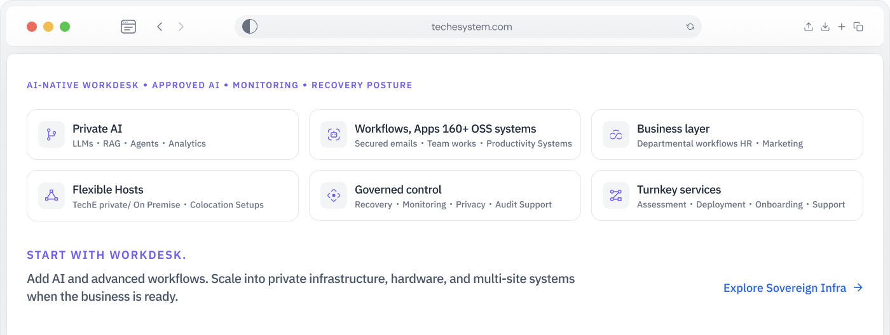

SaaS overrun
Current experience: More tools, seats, renewals, less control.
TechE Path: Curated Stacks and governed workflows.
TechE gives your business one governed system for AI-native WorkDesk, apps, files, workflows, approved AI, private AI readiness, support, monitoring, recovery posture, and the standard managed infrastructure required for your package.

SMBs are adding AI, SaaS, cloud, files, devices, vendors, and infrastructure faster than they are building control. TechE turns scattered technology into one governed operating path before the mess becomes expensive to unwind.
Current experience: More tools, seats, renewals, less control.
TechE Path: Curated Stacks and governed workflows.
Current experience: Business data, prompts, decisions, and documents need
governed use.
TechE Path: Approved AI and private AI / RAG where scoped.
Current experience: Records, contracts, forms, decisions, and knowledge live
everywhere.
TechE Path: WorkDesk files, records, roles, and access.
Current experience: Servers start fast; governance, monitoring, recovery, and
rationalisation lag.
TechE Path: Managed infrastructure + Sovereign Infra scale path.
Current experience: NAS boxes, mini PCs, routers, backup drives, local servers,
and devices pile up.
TechE Path: X / UNO / hardware blocks where justified.
Current experience: Tickets move while the operating model stays fragmented.
TechE Path: One governed operating path.
Current experience: The owner becomes the integration layer.
TechE Path: Mapped, scoped, governed business system.
Stop paying for chaos. Start compounding capability.